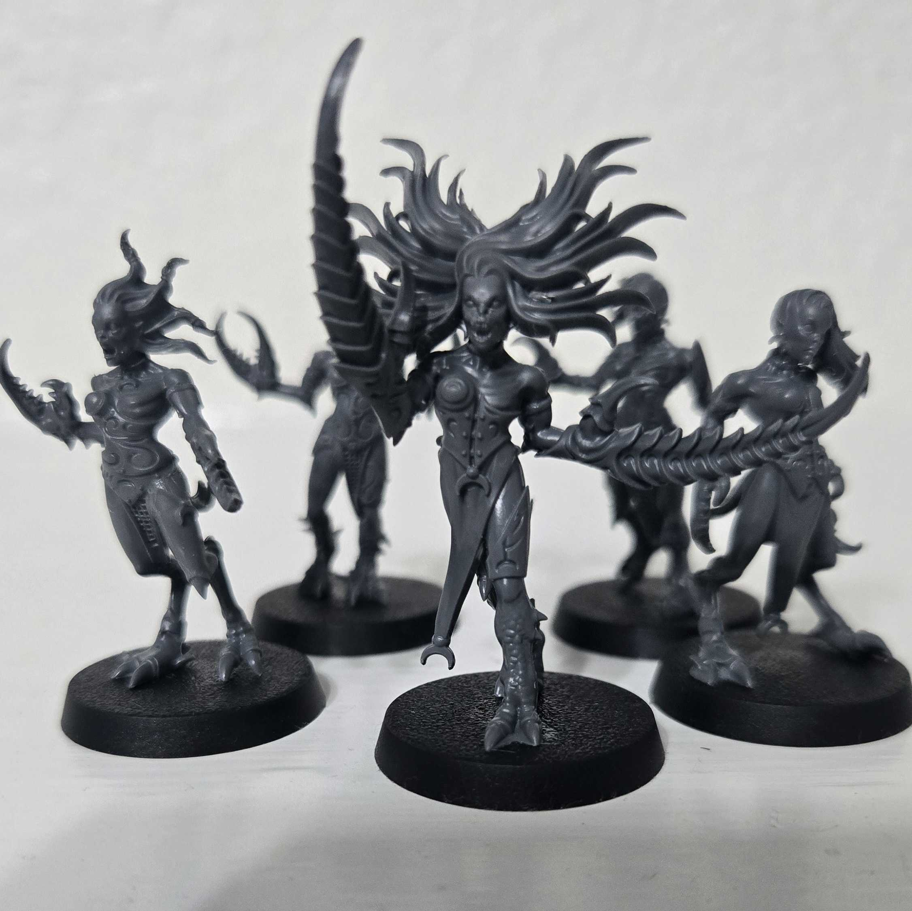
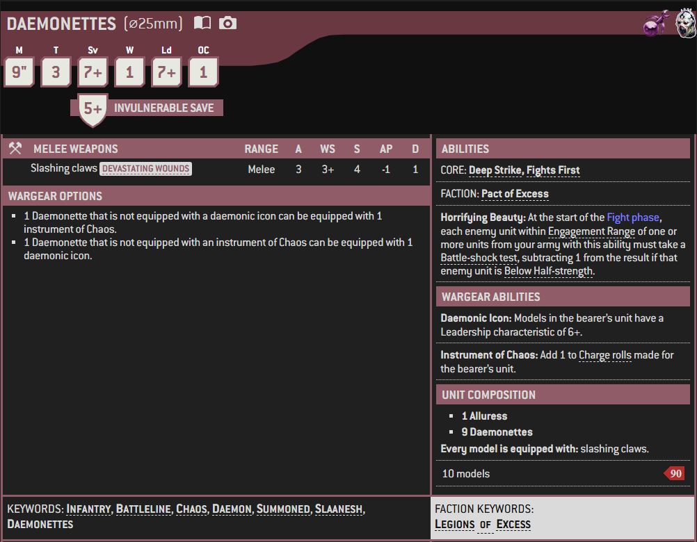

1 / 3

Miniature
2 / 3

Box Art
3 / 3

Artwork
A Daemonette, also known as a "Maiden of Ecstasy," is a Lesser Daemon of Slaanesh, the Prince of Pleasure and Chaos God of amoral pleasure. Also known as "Bringers of Joyous Degradation," "Harbingers of Endless Delights," the "Children of Slaanesh," and "Seekers of Decadence," Daemonettes are all these things and more.
Their physical appearance is confounding. At once impossibly twisted and shamefully intriguing, the hermaphroditic form of a Daemonette is both repulsive and nearly impossible for a mortal to turn away from. In battle, Daemonettes are lithe, dexterous killers, whose claws can tear their opponents to shreds, or allure their mortal victims into their clutches.
When mounted upon the disturbingly graceful Daemonic mounts known as a Steed of Slaanesh, a Daemonette is called a Seeker of Slaanesh, who form the vanguard of the Dark Prince's Daemonic legions. These lithe, sensual beasts are swift and powerful and track mortals by tasting their desires on the air.
Daemonettes can gift their victims with a mixture of excruciatingly painful caresses and the most delicate and tender of killing strokes. Even in the most gruesome of conflicts, the Daemonettes smile in secret ecstasy as they go about their deadly work, delighting in the waves of emotion -- pleasurable or painful -- emanating from their enemies.
